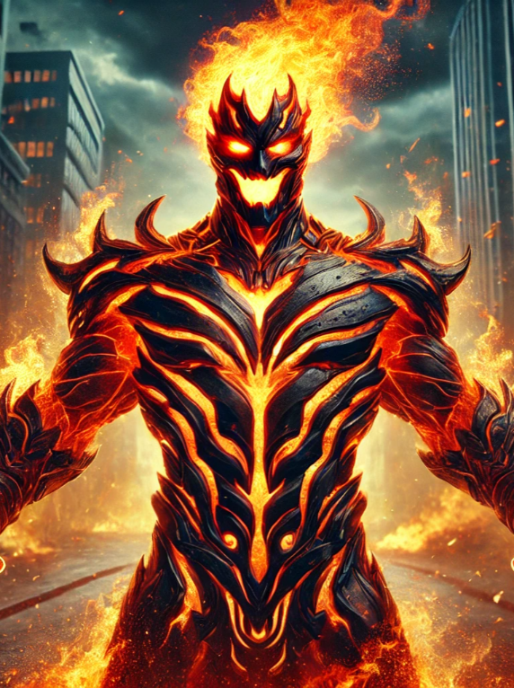

Inferno: The Burning Rage

Michael Reeves wasn't always the flame-wreathed terrorist he
is today. He started as a dedicated firefighter at Engine
Company 28, saving lives alongside his fellow first
responders. But his fate changed during one catastrophic
chemical fire.
Early Life:
-
Born into a firefighting family, following his father's
footsteps
- Rose through the ranks with dedication and skill
- Known for taking risks to save civilians
-
Partnered often with Connor Flanagan on major incidents
The Turning Point:
-
Responded to a chemical facility fire with contaminated
accelerants
-
Caught in an explosion of tainted experimental compounds
-
The corrupted flames bonded with his cellular structure
-
His transformation drove him into madness and isolation
Manifestation of Power:
- His body became a conduit for destructive fire
- The constant burning pain twisted his mind
- Lost the ability to control his thermal output
-
Developed an obsession with "purifying" through flame
Rise in Violence:
-
Started with small acts of arson against empty buildings
- Escalated to targeting active fire stations
- Developed intricate knowledge of bomb-making
- Used firefighter expertise to maximize destruction
Recent Capture:
The Final Strike:
-
Orchestrated multiple simultaneous attacks on firehouses
- Rigged explosives throughout Dorchester station
- Took hostages to prevent interference
- Triggered secondary devices across Boston
Legacy:
Inferno's rampage left 12 firehouses damaged or destroyed,
23 firefighters injured, and millions in infrastructure
damage. His capture marked the end of a six-month campaign
of terror against Boston's emergency services. He now
resides in a specialized containment cell, his flames
burning with unquenchable rage.
With his capture, Boston rebuilds - but the scars of his
attacks remain, both on the city and in the minds of those
who once called him brother.